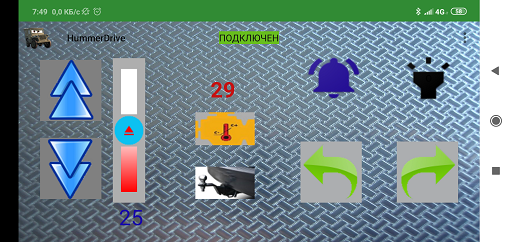
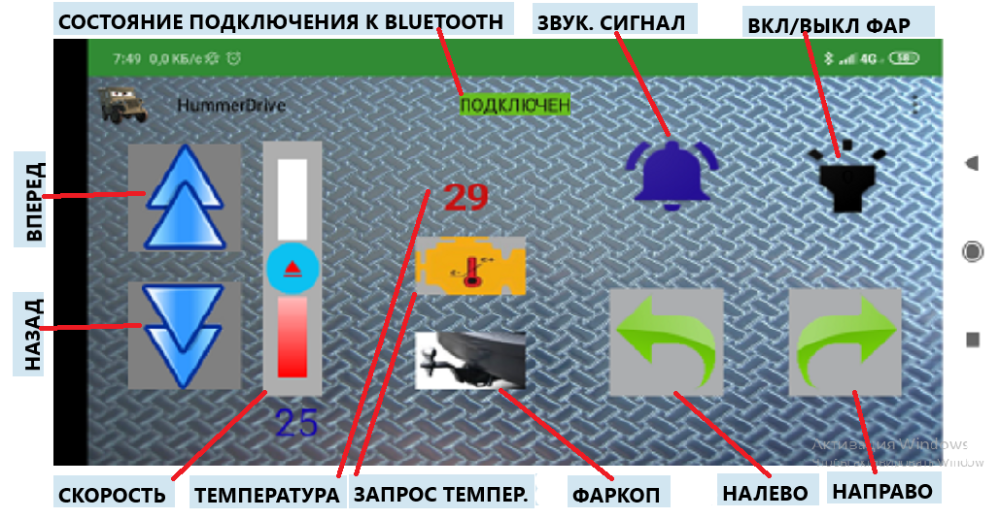

Управление игрушечной машинкой через BlueTooth канал
Постановка задачи
-
Создание андроид приложения для управления игрушечной машинкой посредством BlueTooth канала
-
Разработка и монтаж цифровой электрической схемы с использованием Ардуино модулей
-
Написание программы - скетч для ардуино микроконтроллера
Создание андроид приложения для управления игрушечной машинкой посредством BlueTooth канала
Одним из первых моих андроид приложений, с которого, можно сказать, я погрузился в "Мир Андроид", стало
приложение для управления китайской игрушечной машинкой которая раннее управлялась с помощью джойстика через
радиоканал и имела ограниченный функционал команд: вперед - назад - направо - налево. Разрабатываемое приложение
на андроиде предоставляет неограниченный выбор техник, настроек, каким образом и как можно передавать команды,
а также принимать команды/данные с управляемого модуля.
Создание приложения(назовем его HummerDrive )
производилось в интегрированной среде разработки Android Studio 3.5.3 .
Так как главным пользователем данного приложения является мой сын, то UI
разрабатывался наиболее простым в использовании и визуально адаптивным.

И обозначение кнопок:
